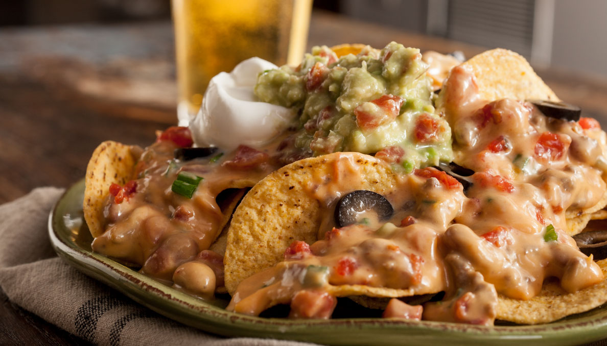

Fresh Hot Nachos!

These molten nachos is a great way to make a memory of your tailgate party when it leaves a stain on your 49ers jersery!
Ingredients
- 2 garlic cloves, minced
- 1 (16 ounce) box mild Mexican processed cheese, cut into cubes
- 1 (15 ounce) can chili hot beans
- 1/2 cup chopped green onions
- 1 cup shredded cheddar cheese
- 1 (14.5 ounce) can Red Gold® Petite Diced Tomatoes with Green Chilies 14.5 oz, drained
- Tortilla chips
- 1/4 cup low fat sour cream
- 1/4 cup sliced black olives
- 1/2 cup guacamole
Instructions
- In a large skillet, brown ground beef and garlic until beef is thoroughly cooked, drain well.
- Add processed cheese, beans and onion; stir to combine. Heat mixture until hot and cheese is melted. Before serving add cheddar cheese and diced tomatoes; stir to combine.
- Arrange tortilla chips on a large platter and top with meat mixture. Top with guacamole, sour cream and sliced ripe olives.
- Lay out for your guest to savor these delicious nachos
Enjoy Your Food!
Home